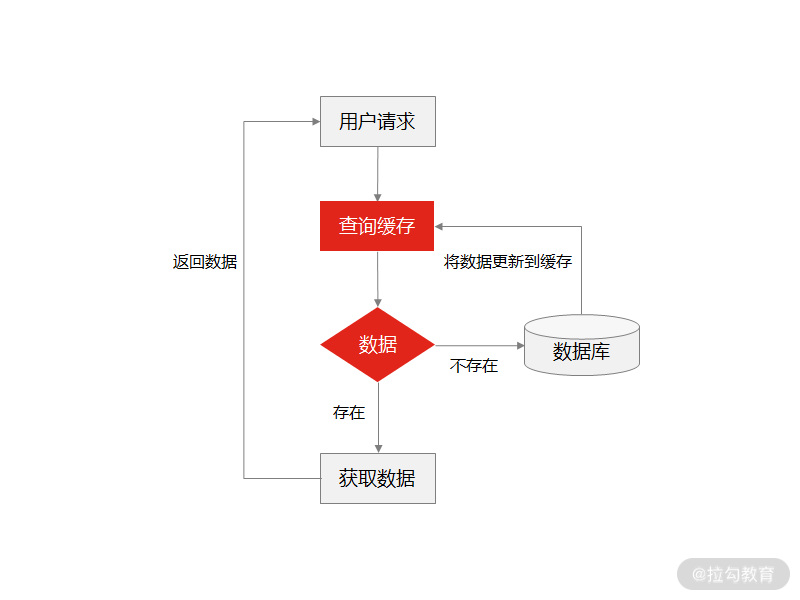
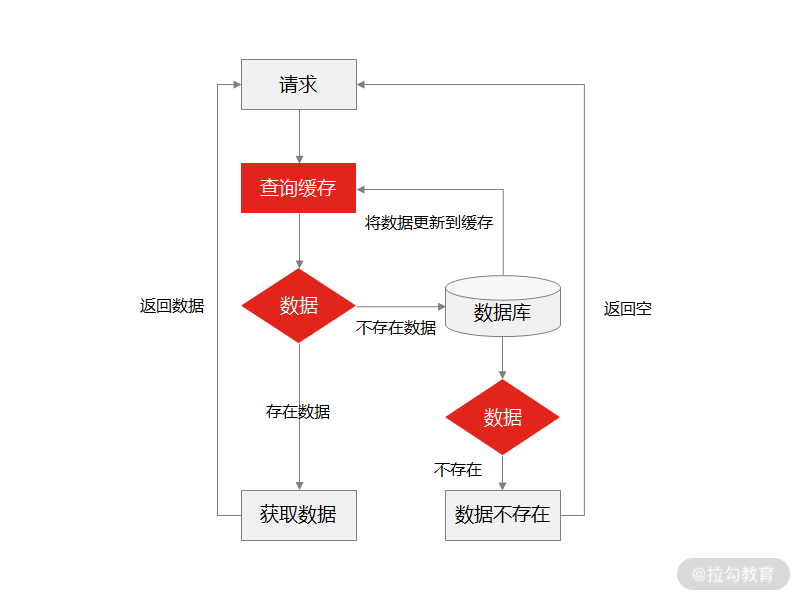
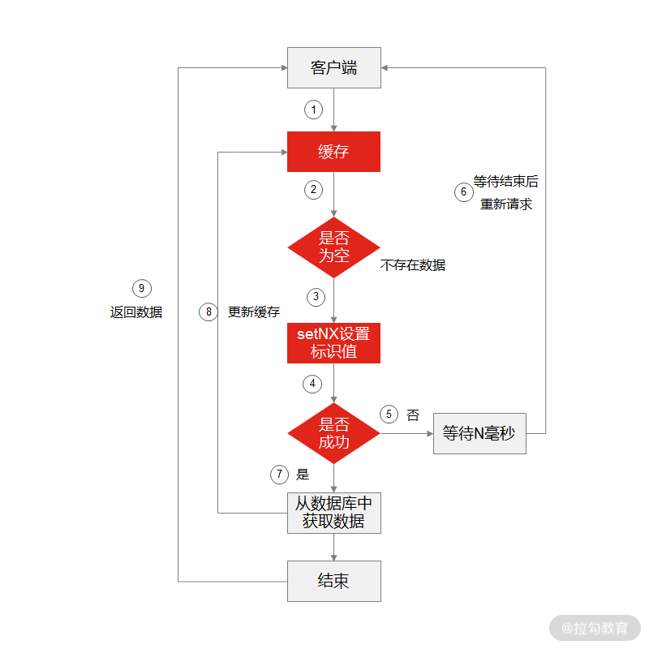
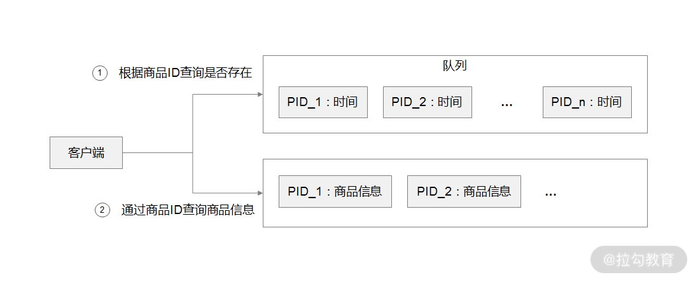
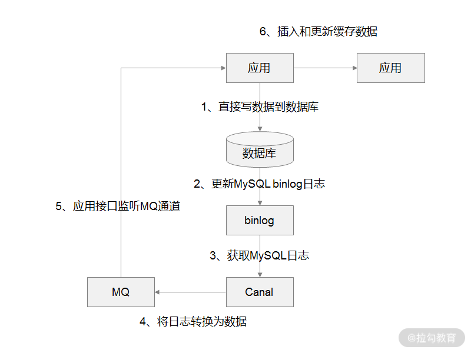
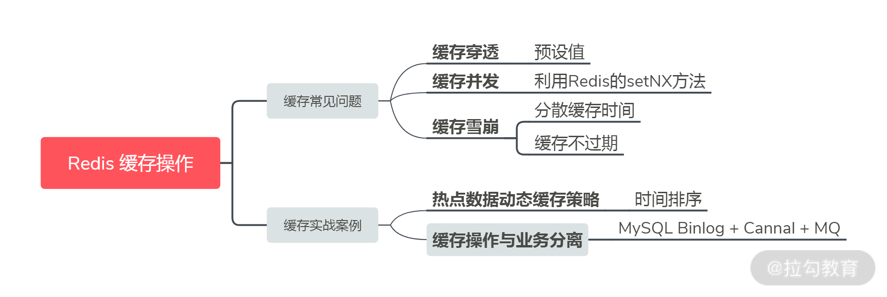

- 00 开篇词 中高级研发面试，逃不开架构设计这一环.md.html
- 01 研发工程师想提升面试竞争力，该具备这三个技术认知.md.html
- 02 研发工程师如何用架构师视角回答架构设计方案？.md.html
- 03 面试官如何考察与 CAP 有关的分布式理论？.md.html
- 04 亿级商品存储下，如何深度回答分布式系统的原理性问题？.md.html
- 05 海量并发场景下，如何回答分布式事务一致性问题？.md.html
- 06 分布式系统中，如何回答锁的实现原理？.md.html
- 07 RPC：如何在面试中展现出“造轮子”的能力？.md.html
- 08 MQ：如何回答消息队列的丢失、重复与积压问题.md.html
- 08 案例串联 如何让系统抗住双十一的预约抢购活动？.md.html
- 09 如何回答 MySQL 的索引原理与优化问题？.md.html
- 10 如何回答 MySQL 的事务隔离级别和锁的机制？.md.html
- 11 读多写少：MySQL 如何优化数据查询方案？.md.html
- 12 写多读少：MySQL 如何优化数据存储方案？.md.html
- 13 缓存原理：应对面试你要掌握 Redis 哪些原理？.md.html
- 14 缓存策略：面试中如何回答缓存穿透、雪崩等问题？.md.html
- 15 如何向面试官证明你做的系统是高可用的？.md.html
- 16 如何从架构师角度回答系统容错、降级等高可用问题？.md.html
- 17 如何向面试官证明你做的系统是高性能的？.md.html
- 18 如何从架构师角度回答怎么应对千万级流量的问题？.md.html
- 19 彩蛋 互联网架构设计面试，你需要掌握的知识体系.md.html
- 结束语 程序员的道、术、势.md.html
14 缓存策略：面试中如何回答缓存穿透、雪崩等问题？
上一讲，我带你学习了开源缓存数据库 Redis 的原理（比如线程模型、数据持久化，以及数据复制）。这一讲，我们从应用案例入手，来了解经常遇到的缓存设计问题，比如缓存雪崩、缓存并发，缓存穿透等。
案例背景
我们来模拟一个面试场景（如图所示） ：
系统收到用户的频繁查询请求时，会先从缓存中查找数据，如果缓存中有数据，直接从中读取数据，响应给请求方；如果缓存中没有数据，则从数据库中读取数据，然后再更新缓存，这样再获取这条数据时，可以直接从缓存中获取，不用再读取数据库。

缓存设计方案
这是一种常见的解决“查询请求频繁”的设计方案，那么这种方案在查询请求并发较高时，会存在什么问题呢？
案例分析
从“案例背景”中，你可以发现，在面试中面试官通常考察“缓存设计”的套路是：给定一个场景（如查询请求量较高的场景）先让候选人说明场景中存在的问题，再给出解决方案。
我们以“电商平台商品详情页”为例，商品详情页中缓存了商品名称、描述、价格、优惠政策等信息，在双十一大促时，商品详情页的缓存经常存在缓存穿透、缓存并发、缓存雪崩，以及缓存设计等问题，接下来我们就重点解决这些高频问题，设计出一套高可用高性能的缓存架构方案。
案例解答
缓存穿透问题
缓存穿透指的是每次查询个别 key 时，key 在缓存系统不命中，此时应用系统就会从数据库中查询，如果数据库中存在这条数据，则获取数据并更新缓存系统。但如果数据库中也没有这条数据，这个时候就无法更新缓存，就会造成一个问题：查询缓存中不存在的数据时，每次都要查询数据库。

缓存穿透
那么如果有人利用“查询缓存中不存在的数据时，每次都要查询数据库”恶意攻击的话，数据库会承担非常大的压力，甚至宕机。
解决缓存穿透的通用方案是： 给所有指定的 key 预先设定一个默认值，比如空字符串“Null”，当返回这个空字符串“Null”时，我们可以认为这是一个不存在的 key，在业务代码中，就可以判断是否取消查询数据库的操作，或者等待一段时间再请求这个 key。如果此时取到的值不再是“Null”，我们就可以认为缓存中对应的 key 有值了，这就避免出现请求访问到数据库的情况，从而把大量的类似请求挡在了缓存之中。
缓存并发问题
假设在缓存失效的同时，出现多个客户端并发请求获取同一个 key 的情况，此时因为 key 已经过期了，所有请求在缓存数据库中查询 key 不命中，那么所有请求就会到数据库中去查询，然后当查询到数据之后，所有请求再重复将查询到的数据更新到缓存中。
这里就会引发一个问题，所有请求更新的是同一条数据，这不仅会增加数据库的压力，还会因为反复更新缓存而占用缓存资源，这就叫缓存并发。那你怎么解决缓存并发呢？

解决缓存并发
- 首先，客户端发起请求，先从缓存中读取数据，判断是否能从缓存中读取到数据；
- 如果读取到数据，则直接返回给客户端，流程结束；
- 如果没有读取到数据，那么就在 Redis 中使用 setNX 方法设置一个状态位，表示这是一种锁定状态；
- 如果锁定状态设置成功，表示已经锁定成功，这时候请求从数据库中读取数据，然后更新缓存，最后再将数据返回给客户端；
- 如果锁定状态没有设置成功，表示这个状态位已经被其他请求锁定，此时这个请求会等待一段时间再重新发起数据查询；
- 再次查询后发现缓存中已经有数据了，那么直接返回数据给客户端。
这样就能保证在同一时间只能有一个请求来查询数据库并更新缓存系统，其他请求只能等待重新发起查询，从而解决缓存并发的问题。
缓存雪崩问题
我们在实际开发过程中，通常会不断地往缓存中写数据，并且很多情况下，程序员在开发时，会将缓存的过期时间设置为一个固定的时间常量（比如 1 分钟、5 分钟）。这就可能出现系统在运行中，同时设置了很多缓存 key，并且这些 key 的过期时间都一样的情况，然后当 key 到期时，缓存集体同时失效，如果此时请求并发很高，就会导致大面积的请求打到数据库，造成数据库压力瞬间增大，出现缓存雪崩的现象。
对于缓存雪崩问题，我们可以采用两种方案解决。
- 将缓存失效时间随机打散： 我们可以在原有的失效时间基础上增加一个随机值（比如 1 到 10 分钟）这样每个缓存的过期时间都不重复了，也就降低了缓存集体失效的概率。
- 设置缓存不过期： 我们可以通过后台服务来更新缓存数据，从而避免因为缓存失效造成的缓存雪崩，也可以在一定程度上避免缓存并发问题。
讲到这儿，缓存穿透、并发、雪崩的相关问题我们就讲完了。在通常情况下，面试官还会出一些缓存设计问题，比如：
- 怎么设计一个动态缓存热点数据的策略？
- 怎么设计一个缓存操作与业务分离的架构？
这是作为中高级研发工程师必须要掌握的内容。
面试官会这样问：由于数据存储受限，系统并不是将所有数据都需要存放到缓存中的，而只是将其中一部分热点数据缓存起来，那么就引出来一个问题，即如何设计一个缓存策略，可以动态缓存热点数据呢？
我们同样举电商平台场景中的例子，现在要求只缓存用户经常访问的 Top 1000 的商品。

解决缓存热点问题
那么缓存策略的总体思路：就是通过判断数据最新访问时间来做排名，并过滤掉不常访问的数据，只留下经常访问的数据，具体细节如下。
- 先通过缓存系统做一个排序队列（比如存放 1000 个商品），系统会根据商品的访问时间，更新队列信息，越是最近访问的商品排名越靠前。
- 同时系统会定期过滤掉队列中排名最后的 200 个商品，然后再从数据库中随机读取出 200 个商品加入队列中。
- 这样当请求每次到达的时候，会先从队列中获取商品 ID，如果命中，就根据 ID 再从另一个缓存数据结构中读取实际的商品信息，并返回。
- 在 Redis 中可以用 zadd 方法和 zrange 方法来完成排序队列和获取 200 个商品的操作。
前面的内容中，我们都是将缓存操作与业务代码耦合在一起，这样虽然在项目初期实现起来简单容易，但是随着项目的迭代，代码的可维护性会越来越差，并且也不符合架构的“高内聚，低耦合”的设计原则，那么如何解决这个问题呢？
回答的思路可以是这样：将缓存操作与业务代码解耦，实现方案上可以通过 MySQL Binlog + Canal + MQ 的方式。
我举一个实际的场景，比如用户在应用系统的后台添加一条配置信息，配置信息存储到了 MySQL 数据库中，同时数据库更新了 Binlog 日志数据，接着再通过使用 Canal 组件来获读取最新的 Binlog 日志数据，然后解析日志数据，并通过事先约定好的数据格式，发送到 MQ 消息队列中，最后再由应用系统将 MQ 中的数据更新到 Redis 中，这样就完成了缓存操作和业务代码之间的解耦。

解决缓存操作与业务系统分离
总结
为了方便你记忆，我总结一下今天的内容：

今天这一讲，我推荐采用预设值方案解决缓存穿透（当然还有基于布隆过滤器的实现方式，但它本身存在误判的情况，实现起来也较复杂，所以我不推荐使用，不过你可以了解一下）。另外，你可以利用 Redis 的 setNX 方法来配合解决缓存并发。除此之外，你可以通过将缓存失效时间随机打散，或者设置缓存不过期，解决缓存雪崩的问题。